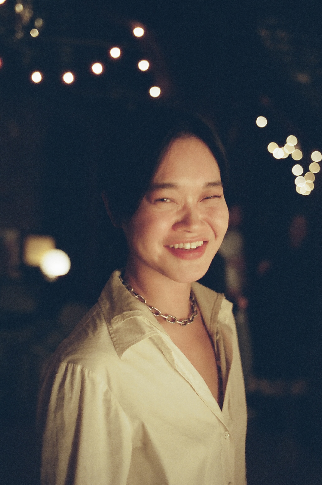

In living life, we might often find ourselves repeating the same patterns. These patterns can led us to suffer, be frustrated, or feel stuck. Our work together can involve understanding what these patterns are, and what parts of our life they might have been borne from. We’ll investigate how these ways of living work for us, and also how they might not. I believe that by understanding how and why we live the way we do, we can then start to develop the agency to decide if we want to continue to live that way with more ease and self-compassion, or to try something new. Medications can be helpful for this process.
I primarily work from psychodynamic perspective, integrating work from the relational approach, which is invites discussion of power structures inherent in a physician-patient relationship. I am a member of the The Asian American Center for Psychoanalysis, and have furthered my studies in psychoanalysis through the Steve Mitchell Relational Study Center and the Columbia University Center for Psychoanalysis. I integrate approaches from cognitive behavioral therapy, acceptance commitment therapy, and dialectical behavioral therapy. I focus on trauma, the Asian American experience, anxiety disorders and depressive disorders. I am also an inpatient psychiatrist at Bellevue Hospital, where I primarily treat individuals with psychosis and trauma from a diverse range of identities, socioeconomic status, and backgrounds.